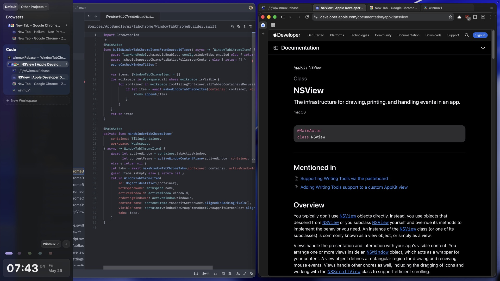
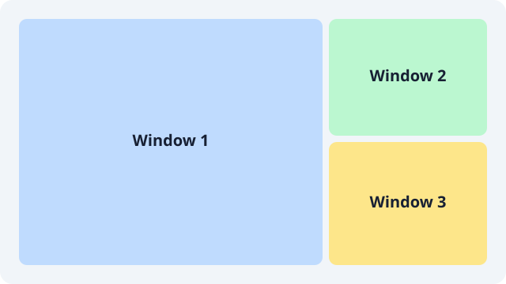
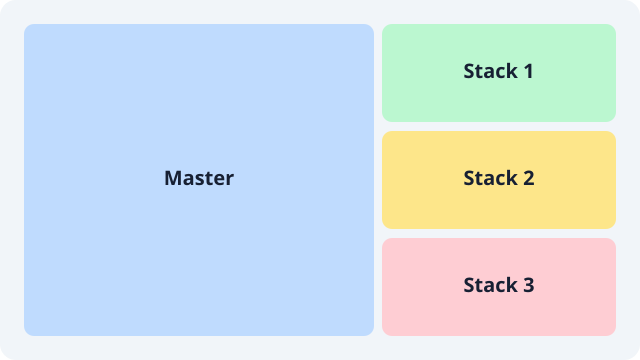
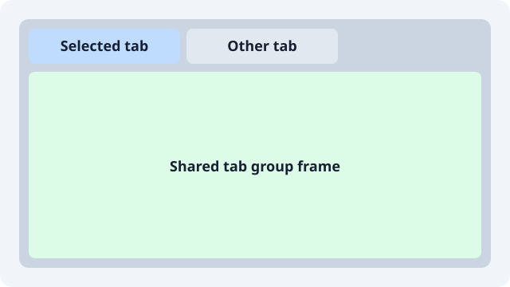
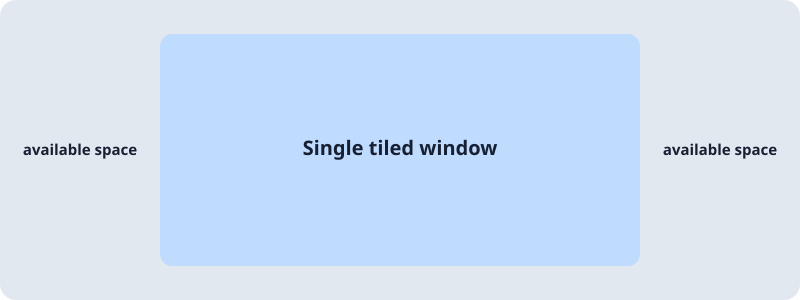

WinMuxX
A sidebar window manager for macOS, with Dwindle tiling and room to work on ultrawide displays.
Free and open source · MIT licensed
Organise windows by project
Group windows into workspaces, gather workspaces into projects, and switch between them from a sidebar. WinMuxX tiles windows automatically and keeps whole workspaces intact when you move them between displays.
Sidebar-first
A native sidebar lists projects, workspaces and windows. It can stay expanded, collapse to a compact rail, or hide and reveal from the display edge.
Projects and workspaces
Keep the named workspaces you choose, in the order you set. Projects group related workspaces so you can switch whole contexts at once.
Dwindle tiling by default
New windows split the focused area along its longer side. Master, tiles and tab layouts are a command away.
Made for ultrawide
Limit a lone window to a share of the width and align it left, centre or right, with per-display and per-workspace overrides.
Multiple displays
Move a whole workspace to another display, including its nested layout and tabs. Selecting a workspace visible elsewhere focuses it there.
Tab groups and borders
Stack windows into tab groups with a shared glass or solid style. Window borders are built in.
Settings and TOML
Every option lives in one TOML file. The Settings window edits that file, validates it and reloads it, including a full configuration editor.
Scriptable CLI
The winmuxx command drives layouts, focus, workspaces and launch scripts, and remains compatible with AeroSpace-style configs.
Recovery built in
Diagnostics in the menu bar, winmuxx doctor, and recovery of original window frames after an interrupted session.
Layouts
Each workspace has a layout for its tree, and each container decides how to show its children.

Dwindle
Every new window splits the focused area. Closing a window lets the tree rebalance.

Master
One main window and a stack beside it. On ultrawide displays, two main windows can sit side by side.

Tabs
Turn any container into a tab group and flip between its windows from the tab strip.

Lone window width
Keep a single window at a comfortable width instead of stretching it across the whole display.
Install
WinMuxX runs on macOS. Release builds are signed locally and not notarised.
Download
Get the latest ZIP from GitHub releases, extract
WinMuxX.appand move it to Applications.Grant Accessibility access
Open WinMuxX and allow Accessibility access when macOS asks; WinMuxX uses it to read and position windows. Screen Recording is optional and only used for workspace previews.
Add the CLI to your PATH
Optional. The link follows future app updates.
ln -s /Applications/WinMuxX.app/Contents/MacOS/winmuxx-cli /opt/homebrew/bin/winmuxx winmuxx doctorMake it yours
Open Settings from the WinMuxX menu, or edit
~/.config/winmuxx/winmux.toml. On first launch WinMuxX can copy an existing WinMux configuration without changing it.fullscreen-width = 0.70 single-window-alignment = 'center' [workspace-sidebar] position = 'left' chrome-style = 'liquid-glass'
Documentation
Guides live in the repository alongside the code.